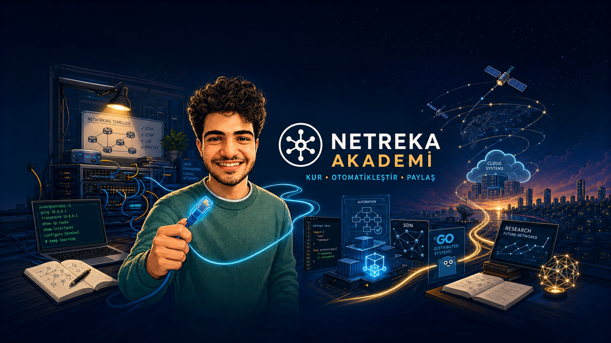
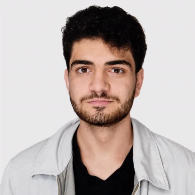
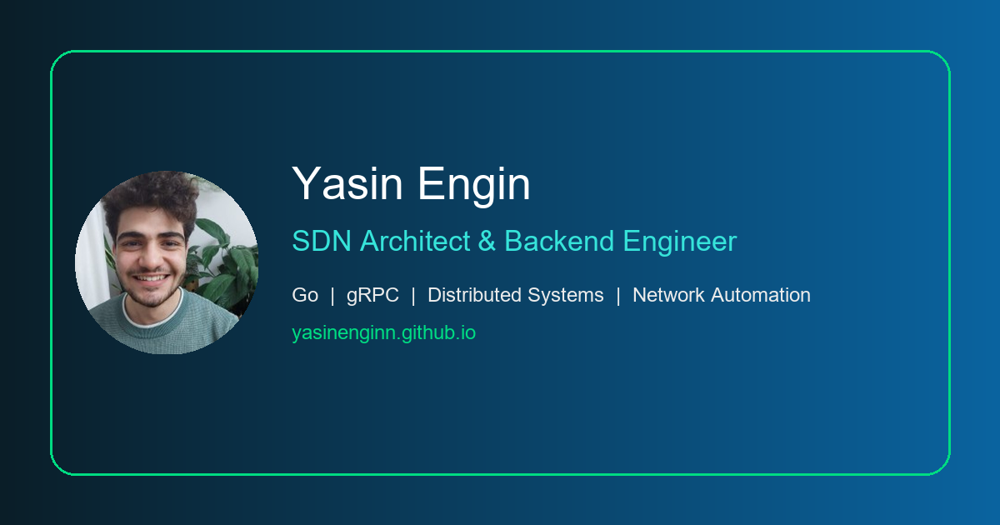
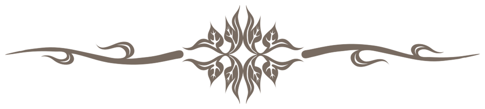

{kind=link}
{kind=link}
{kind=link}

Engineering focus showcase
Portfolio-ready visual connecting the four main Netreka Academy learning areas.
Open original PNGPublic media kit
These are the public visual assets connected to my portfolio and Netreka Academy. Optimized files are used on the site; high-resolution originals remain directly accessible for professional profiles and project references.

Profile identity
The responsive WebP portrait keeps page loads light, while the uncropped high-resolution JPG preserves the original professional photograph.
Technical education identity

Portfolio-ready visual connecting the four main Netreka Academy learning areas.
Open original PNGChannel artwork
The source variants remain public for device-safe cropping and future channel revisions. They are linked instead of loaded at once to protect page performance.
Portfolio system

Fallback preview for engineering notes and shared portfolio pages.

A supporting visual from the portfolio's established design language.
{kind=link}
{kind=link}
{kind=link}
{kind=link}
{kind=link}
{kind=link}
{kind=link}